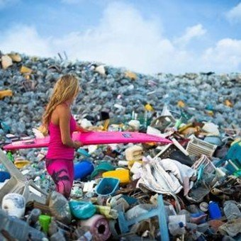

Bio-juego
Hola bienvenidos,

adquiriendo este videojuego y jugandolo adquiriras conocimiento sobre
como separar la basura y si lo practicas en tu dia a dia podras ayudar a que animales y personas esten sanos
Hola bienvenidos,
adquiriendo este videojuego y jugandolo adquiriras conocimiento sobre
como separar la basura y si lo practicas en tu dia a dia podras ayudar a que animales y personas esten sanos
BOB es un robot solar que convierte aire contaminado en limpio con un filtro que está hecho a base de plantas.
BOB no necesita ningún tipo de carga, para cargar a BOB sólo ponlo en un lugar que le de el sol para que el cargador solar que está en la parte de arriba absorva toda la energia solar y listo!
En nuestro país se producen 84 mil 200 toneladas de residuos sólidos al día.
¿Cuánto es eso? Bueno, una ballena azul pesa más o menos 170 toneladas,
así que imagínate: diario generamos el equivalente a 495 ballenas azules de basura.
Los mexicanos consumimos cerca de 200,000 bolsas de plástico por hora,
y no son biodegradables. Además de que ensucian nuestras calles y campos,
el aire se las lleva hasta sitios en donde los animales se las tragan, creyendo que son comida.
todos los niños y niñas que quieran tener un mundo mejor